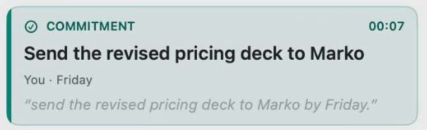
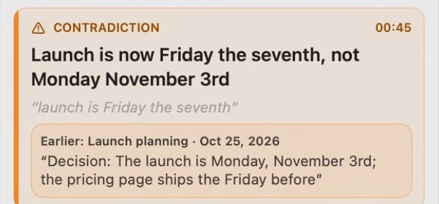
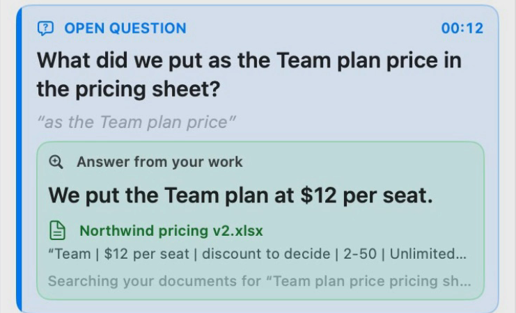
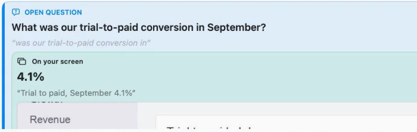
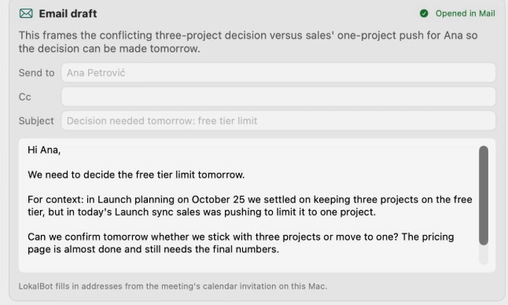

Catches what matters while you record, then drafts the follow-up.

A promise, with who and when.

A conflict with what an earlier meeting decided.

A question, answered from your work, with the row it quotes.

Or from your screen: something you had open earlier.

On this Mac, nothing leaves it. A Think server gets only what you approved.
The model reads transcript text. Email addresses are never sent.
An item or answer without a matching quote is dropped.
Radar starts when you press Start. Follow-through only proposes.
First built on a hosted model. On a local Think model it is covered by tests, not yet by real meetings, and speed on a small model isn't measured. Mac only.
Pictures: the app on sample data, filmed on an earlier build.